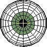

An Endowed Laboratory of CASE School of Medicine and Case Western Reserve University
Located in the Louis Stokes Cleveland Department of Veterans Affairs Medical Center
Cleveland, Ohio, USA
|
Measurement techniques: Infrared Reflection, Magnetic Search Coil, and High-Speed Digital Video Systems to record eye movements in the horizontal, vertical and torsional planes of humans; Motion Platform and Rotating Chairs to study balance. Off-Site Research: Because the Daroff-Dell'Osso Ocular Motility Laboratory is designed for the study of human eye movements only, any non-human studies, e.g., on canines [COMLAB] and mice, have been carried out by specific investigators at other facilities in collaboration with investigators based at those facilities. Downloadable copies of the Theses, Book, Journal Articles, and Chapters of L.F. Dell'Osso (Flyer) (Book Cover) (Book and Appendices E and F with videos) PubMed Links to Recent OMLAB Publications RB Daroff LF Dell'Osso RJ Leigh JS Stahl MF Walker JB Jacobs A Serra Nystagmus Lecture! Dell'Osso LF: A Half-Century of Research in Infantile Nystagmus Syndrome: Theoretical and Clinical Messages. Distinguished Guest Lecture OMLAB Editorial! Dell'Osso LF: AGN Roadside Sobriety Test, DUI, and Childhood Nystagmus: A Charge with no Foundation, Test with Flawed Scientific Bases, and Trial that Never Should have Occurred. OMLAB Editorial #071021 Transcript of Expert Testimony in a DUI case based on the AGN Roadside Sobriety Test Administered to a Person with Childhood Nystagmus. OMLAB Report! Dell'Osso LF: Simulation of Tunnel Acuity in INS. OMLAB Report #072020 Figures from Comment on CSNB nystagmus paper, 2019 Letter to the Editor: Nystagmus in patients with congenital stationary night blindness (CSNB) originates from synchronously firing retinal ganglion cells. [Go to "DUAL JERK (INS+NOT NYSTAGMUS) FIGURES" in Reports and Teaching] 1.History of the Daroff-Dell'Osso Ocular Motility Lab Canine OMlab: Research, Photos, Videos, and Data Canine Eye-Movement Data (In Progress): Achiasmatic Mutant Belgian Sheepdogs American Bulldog RPE65- Briards, and Miscellaneous Visit our Lab Space (includes our 2007 Conference) Ocular Motor Terminology and Conclusions The NAFX: an analysis method for visual acuity and nystagmus Ocular Motor Hypotheses: Support and Disproof Therapeutic Applications of our Research Diagnostic Criteria and Clinical Pearls 2. Personnel (Investigators, Visiting Scientists, Fellows, Students, Staff) 3. Software, Models, & Data OMtools Software (including NAFX) Ocular Motor System Models: Normal, INS, FMNS, Saccadic and Plant Disorders Eye-Movement Data: Published (2002-2014); OMLAB (S001-S347, 1986-2013); In Progress: RM Steinman (S001, 1984); Han Collewijn (AS001, 1993) 4. Reports & Teaching Eye-Movement Recording, Calibration, and NAFX; Therapies; Achiasma; Surgery; INS Model; INS Assessment; Other Patient Handouts: INS; INS Treatments; T&R; INS Acuity; Miscellaneous 5. Editorials: Ethical Science, INS Outcome Measures 6. Contact Information Data recorded elsewhere will soon be added. Last Data Upload: [Oct 16, 2018] Spreadsheets Updated: [Dec 3, 2015] Click here to download OMS Models v1.5, v1.4, & v1.0 Note Added: [September 24, 2010] Dell'Osso LF: Appropriate Outcome Measures for Infantile Nystagmus Therapies: "Science-based" not "Evidence-based" Studies. OMLAB Editorial #010410 Epilogue Added: [August 6, 2008] Dell'Osso LF: INOS 2008 - Ethical Science or Something Else? OMLAB Editorial #071107 INOS Members Need to Knowinos2008 inos 2008 |